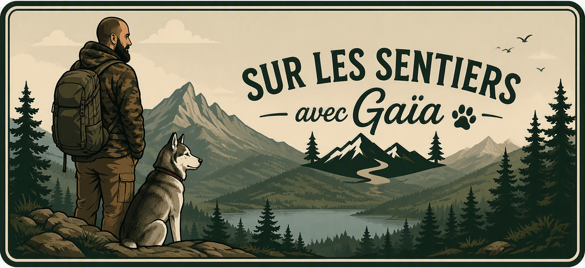
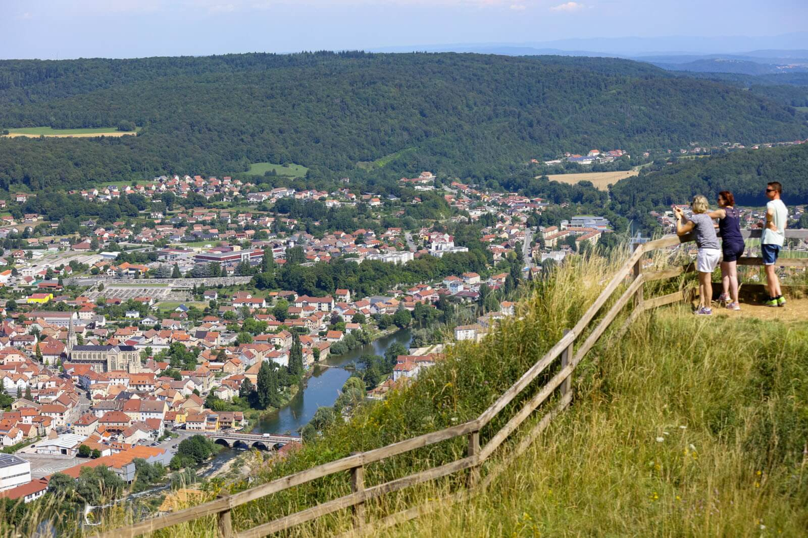

Bienvenue sur le blog "Sur les sentiers avec Gaïa"
Veuillez saisir votre prénom :

Crête des Roches
FACILE
🥾 8 km
🕒 3 h
⛰️ 250 m D+

À quelques pas de chez nous, la Crête des Roches est l'un des endroits où j'aime le plus randonner avec Gaia. Entre les sentiers forestiers, les falaises et les panoramas sur la vallée du Pays de Montbéliard, chaque sortie offre une expérience différente. C'est une randonnée accessible qui permet autant de profiter des paysages que du calme des hauteurs.
🏁. Départ depuis la MPT de Pont-de-Roide.
🥾. Suivre le balisage en direction du Crêt des Roches.
🏞️. Rejoindre le belvédère principal et profiter de la vue.
🌲. Continuer sur le sentier de crête.
🏔️. Arrivé au sommet, prenez quelques minutes pour admirer le panorama, offrir une friandise à Gaia et profiter d'une séance de papouilles bien méritée avant le retour.
↩️. Retour au point de départ par le même itinéraire.
🎒 Équipement recommandé
Chaussures de randonnée ou baskets avec une bonne accroche.
Eau en quantité suffisante, surtout en été.
Casquette et protection solaire par temps ensoleillé.
Veste coupe-vent en cas de météo changeante.
🐾 Avec Gaia
Les chiens sont acceptés sur le parcours.
Prévoir de l'eau pour votre compagnon.
Garder son chien sous surveillance à proximité des falaises.
Quelques friandises peuvent s'avérer très motivantes. 😄
🌦️ Meilleure période
Printemps : nature en pleine floraison.
Été : panorama dégagé mais chaleur plus importante.
Automne : magnifiques couleurs sur les forêts environnantes.
Hiver : prudence sur les passages glissants.
⚠️ À savoir
Rester sur les sentiers balisés.
Attention aux bords de falaises.
Certains passages peuvent être glissants après la pluie.
🐾 Conseil de Gaia : gardez une friandise pour la pause au sommet, c'est bon pour le moral des troupes... surtout le mien !
📸
Galerie photos en préparation
Gaia est encore en train de trier les meilleurs clichés de la randonnée.
🐾 Validation en attente d'une friandise et de quelques papouilles.